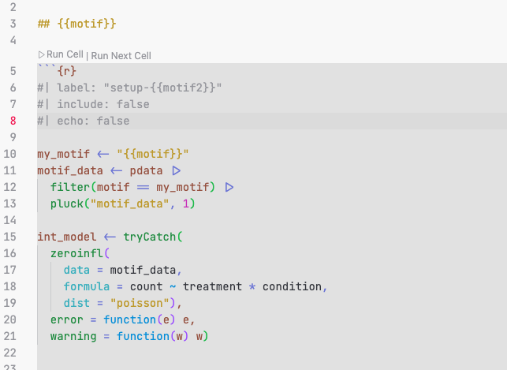
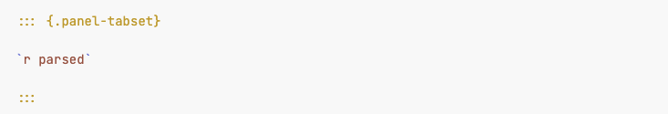
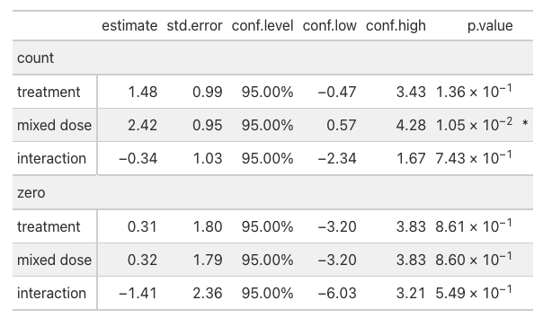

Using quarto for bioinformatics reporting
CISR / onglab / UW Madison
2025-05-20
what is quarto?
A bad why of pronouncing 4?
why quarto?
we had used rmarkdown or variations for a while
it works with other languages:
Python,Julia, …it allows to render many things:
- books
- websites
- manuscripts
mostly because the notation is cleaner
quarto notation I
Instead of adding everything inside the header ‘```{r}’ header, it looks like:
echo: "fenced" gives the code blocks like that
quarto notation II
modifications to the output is done within :::, for example tabs:
::: {.panel-tabset}
## Element 1
## Element 2
:::revealing slide points incrementally:
::: {.incremental}
point 1
point 2
:::callouts
Using something like:
::: {.callout-important}
# Important message
The results ....
:::
yields:
Important message
The results ….
add html files inside your document
- For example to add slides or MultiQC reports into the documents
add html files inside your document
In the yaml header
---
resources:
- "path/to/multiqc_report.html"
---In a chunk
It looks as in: https://biostat.wisc.edu/~rwelch/onglab/albertini/SatTCR_report/qc.html#multiqc-report
using templates with quarto
used when a task is repeated many times, and want the same plot / analysis for many elements
it is done in 3 steps
step 1: render function
the template file looks as

step 2: parse the template
step 3: evaluate the code in the main document

In summary:
- step 1: replaces the “motif” word, wherever it says “{{motif}}”
- step 2: added
pdatainto the environment that is evaluated in the template - step 3: parse the results
gt

gt: https://gt.rstudio.com/

gt example:
```{r}
#| label: "model-example"
#| include: true
#| echo: "fenced"
#| eval: false
int_model |>
tidy_zeroinfl() |>
mutate(
component = if_else(component == "conditional", "count", "zero")) |>
filter(term != "(Intercept)") |>
select(- df.error, - original_term, -statistic) |>
mutate(
term = case_when(
term == "treatmenttreat" ~ "treatment",
term == "conditionB16_mixed" ~ "mixed dose",
TRUE ~ "interaction")) |>
gt::gt(
groupname_col = "component", rowname_col = "term") |>
gt::fmt_number(one_of(c("estimate", "std.error"))) |>
gt::fmt_number(starts_with("conf")) |>
gt::fmt_percent("conf.level") |>
gt::fmt_scientific("p.value") |>
gt::cols_add(
psgn = if_else(p.value <= 0.05, "*", "")) |>
gt::cols_label(psgn = "")
```gt example:

- this is a small table: for larger tables
opt_interactivecan allow for multiple pages
reproducible documents with targets
your own website
gifs in quarto
gifs in quarto
how to add cats in quarto
with extensions
To get this cat:
Install the fontawesome quarto extension:
quarto add quarto-ext/fontawesomeWrite
{{ < fa cat size=5x > } }
https://github.com/quarto-ext/fontawesome
other extensions: https://quarto.org/docs/extensions/
with images and knitr
find a cat image
- open image in new tab
- copy link of new image
with images and knitr
extra materials from people who know more than me
Quarto authoring webinar https://jthomasmock.github.io/quarto-2hr-webinar/
Stephen Turner’s blog https://blog.stephenturner.us/p/quarto-books
Quarto’s gallery https://quarto.org/docs/gallery/
Using python and R together https://nrennie.rbind.io/blog/combining-r-and-python-with-reticulate-and-quarto/